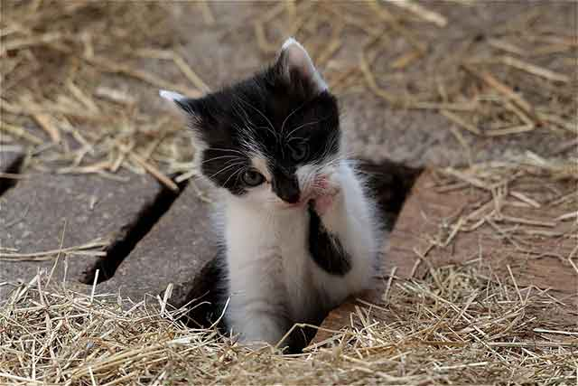

고양이 모래, 어떤 것으로 준비하면 될까요?
고양이를 키우려면 '모래'는 아주 기본적인 물품이 됩니다. 모래는 고양이들이 배변 활동을 하는 곳이자, 고양이 건강 상태를 확인할 수 있는 중요한 수단이 되기도 합니다. 그렇다고 모든 모래가 고양이에게 맞는 것도 아닙니다. 그래서 기호에 맞게 사용하는 것이 중요해요. 만약 고양이의 기호를 생각하지 않고 아무 모래나 사용하면, 고양이가 원하는 곳에 배변하지 않을 수도 있고 또 사람이 쓰는 물건에 아무렇게나 배변할 수도 있답니다. 고양이 모래, 어떤 것으로 준비하면 되는지 알아볼게요.
고양이가 쓸 수 있는 모래는 다양합니다. 아주 비싼 것은 비싸지만, 또 저렴한 모래는 저렴한 편입니다. 분명한 것은 고양이에게도 기호가 있어 모래의 취향을 잘 살피는 것이 중요합니다. 대표적으로 유명한 모래는 벤토나이트, 크리스탈, 우드펠렛, 두부모래 등이 있습니다. 대표적인 모래를 소개해 드릴게요.
[ 모 래 종 류 ]
1) 벤토나이트
많은 분이 사용하는 모래입니다. 모래랑 가장 비슷한 재질이면서 고양이가 쉽게 적응하기도 합니다. 하지만 먼지가 많아 질병에 대한 노출이 다소 높은 편입니다. 더불어 사막화가 잘 일어나 대소변을 본 훈에 처리해야 할 양이 꽤 많은 편입니다.
2) 크리스탈
주재료는 실리카젤로 겉으로 보면 크리스탈처럼 생겼습니다. 먼지가 적고 물 세척이 된다는 장점을 갖고 있습니다. 다만, 냄새를 잡기가 힘들고 고양이 기호성이 다소 떨어지는 편입니다. 더불어 천연재료가 아니다 보니 건강에 좋지 않을 수 있습니다.
3) 우드펠렛
펠렛은 먼지가 적은 편이라 질병에 걸릴 가능성이 작습니다. 게다가 대소변을 보더라도 사막화가 심하지 않아서 비교적 모래 관리가 쉬운 편입니다. 하지만 이 모래 역시 탈취 효과가 떨어지고 고양이가 적응하는 데 어려움을 겪을 수 있습니다.
4) 두부 모래
이름처럼 두부로 만들어진 모래입니다. 그래서 상할 수 있고 벌레가 꼬이기도 쉽습니다. 게다가 고양이가 모래라 생각하기 어려운 소재라서 화장실로 쓰지 않을 수 있습니다.
5) 종이 모래
앞선 대표적인 4개의 종류 외에도 종이 모래가 있습니다. 말 그대로 재질이 종이이죠. 고양이가 대소변을 보면 흔적이 남아 치우기도 좋은 편입니다. 기호성이 다소 떨어지기는 하지만 고양이 건강을 생각하고 재료의 성격을 이해하면 좋은 편입니다.
6) 홍화씨 모래
자연 모래로 먼지 날림이나 사막화되는 것으로부터 자유로운 편입니다. 다만, 홍화씨 특성상 벌레가 꼬이기 쉽습니다.
이것 외에도 다양한 모래가 있지만, 중요한 것은 고양이가 대소변을 보는 환경으로 인식하느냐의 차이인 것 같습니다. 가격도 천차만별이라 주인이 감당할 수 있는 정도의 금액대도 중요한 것 같습니다. 모래는 일회성이 아닌 고양이를 키우는 동안 꾸준히 필요하니까요. 고양이 모래에 대해서 알아봤어요. 생각보다 다양한 모래가 있죠? 고양이에게 꼭 맞는 모래로 기분 좋은 배변 활동을 만들어 주시길 바랍니다.
[출처] 고양이 모래, 어떤 것으로 준비하면 될까요? ｜ 작성자 꼬미꼬미